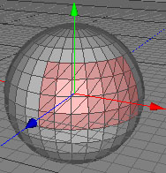
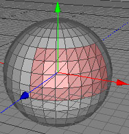

Triangulate Tool
The triangulate tool simply triangulates all quads and ngons in a polygon selection, as in the images below.
 

Modes
The triangulate tool can only be applied to raw polygon objects. It's available in all modes.


To use the triangulate tool, select some polygons of a raw polygon object. If you don't select any polygons all polygons will be triangulated. Then call the menu command "Tools PolygonTriangulate". All quads and ngons in your selection will be replaced by triangles now.
PolygonTriangulate". All quads and ngons in your selection will be replaced by triangles now.
Keys
- none
Properties
- none